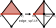
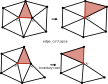
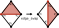
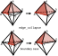
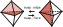
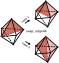

|
Wildmeshing Toolkit
|
You may need to install gmp before compiling the code. You can install gmp via homebrew.
When executing CMake, the data repository will be automatically cloned into the data folder. You can find example meshes and json files for testing there. After compiling the code, you can run the applications under the app folder, e.g. for isotropic remeshing:
This toolkit is a novel approach to describe mesh generation, mesh adaptation, and geometric modeling algorithms relying on changing mesh connectivity using a high-level abstraction. The main motivation is to enable easy customization and development of these algorithms via a declarative specification consisting of a set of per-element invariants, operation scheduling,and attribute transfer for each editing operation.
Many widely used algorithms editing surfaces and volumes can be compactly expressed with our abstraction, and their implementation within our framework is simple, automatically parallelizable on shared-memory architectures, and with guaranteed satisfaction of the prescribed invariants. These algorithms are readable and easy to customize for specific use cases.
This software library implements the abstractiona in our paper and providing automatic shared memory parallelization.
We will use the implementation of the shortest edge collapse algorithm as an example to introduce the framework and run through the basic software structures and APIs of the toolkit.
The algorithm is after [Hoppe 1996] Progressive Meshes which performs a series of collapse operations prioritizing the shorter edges. The algorithm requires only one local operation, edge collapse. We terminate when the mesh reaches a desired number of mesh elements.
We implemented class ShortestEdgeCollapse as a child class of wmtk::TriMesh. The 3d vertex positions are stored as a field of the VertexAttributes.
It is common to have a set of desiderata on the mesh that needs to be satisfied, such as avoiding triangle insertions or self-intersections. The responsibility of ensuring the user-defined explicit invariants being checked after every mesh modification, and after the input is loaded is assumed by the toolkit. It is much easier to ensure correctness for the user, as the checks are handled transparently by the toolkit.
As an example of user-defined invariants, in our shortest edge collapse implementation, we created an envelope around the original surface and designated that any operation shall not cause any vertex to move outside of the envelop, so that during local operations we can roughly keep the shape of the input mesh.
The envelope development is after Exact and Efficient Polyhedral Envelope Containment Check
Opposed to the common practice of attaching mesh attributes to mesh elements we enable the users to only provide the rules on how to update attributes after local operations in a high-level specifications. The actual update is handled entirely by the toolkit.
This easy-to-write user-specified update rule is examplified in our shortest edge collapse as below
It is common to perform mesh editing to improve a given energy functional, such as mesh quality or element size. However, due to the discrete nature of the operations, it is not possible to use standard smooth optimization techniques, and instead the effect of the energy is evaluated before and after every operation to measure its effect on the energy. If the user desires a certain property of the mesh for each operation, the desiderata can be easily coded up as a check in the after operation.
If either the user specified invariants or the after operation check/update has failed, the toolkit will perform an operation rollback that restores the mesh configuration to before the operation. And our toolkit also handles the recovery of element attributes on this occasion. The rollback and attribute protection gurantee both topology and geometry consistency for the mesh. Users would not need to perform any manual updates were the operations to fail, thanks to the rollback.
For easier usage and customization, here we demonstrate the before and after state of each operation and the vertex, edge, face, and tet (in 3d) that is reference.
edge split

edge collapse

edge swap

vertex smooth
This operation does not change the mesh connectivity.
edge split
edge collapse

edge swap / face swap

edge swap 4-4

edge swap 5-6
Similar to 4-4 edge swap.
vertex smooth
This operation does not change the mesh connectivity.
The type and scheduling of local operations is crucial in mesh editing algorithms. This involves maintaining a priority queue of operations, which is updated after every local operation.
We provide a direct way of controlling the operations performed and how the queue is updated through our scheduler. The main purpose of the scheduler is to abstract the operation order and hide parallelization details from the user. Our scheduler provides customizable callbacks, including, Priority, Renew neighbor, Lock vertices, Stopping criterion.
For shortest edge collapse, we want to attempt to collapse all edges, prioritizing the shortest ones, until we reach a fixed number of vertices.
We put here the example of our shortest edge collapse implementation of the Priority and Renew neighbor, and how they are used in scheduler.
To showcase the generality and effectiveness of our approach, we implemented five popular mesh editing algorithms in our framework. All algorithms are accessed through the same application wmtk_app and the user can specify which algorithm to run through the input JSON file. The five algorithms are listed below.
The JSON files are processed with the JSON Spec Engine.
Examples for all algorithms can be found in the data repository.
MIT License.